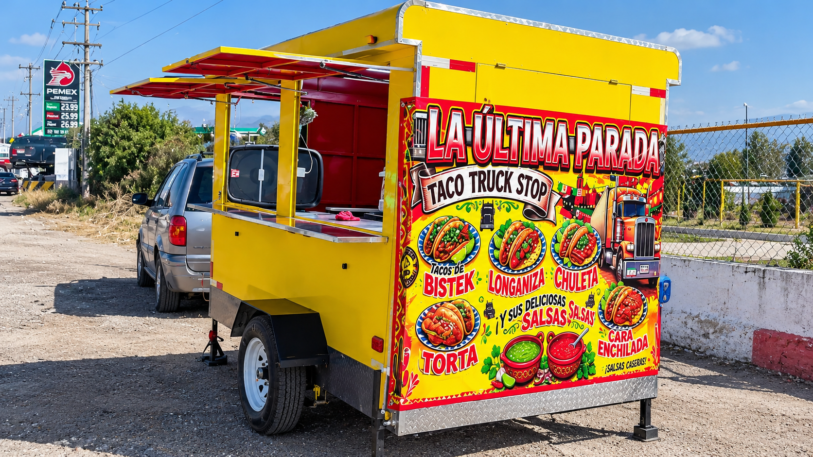

Horarios
Lunes a Domingo
6:00 PM a 1:00 AM
En Tacos Andablo nacimos con la convicción de rescatar la auténtica receta taquera de barrio: carne fresca marinada al día, tortillas calientitas y las salsas más sabrosas de la ciudad.
Nuestro compromiso es brindarte un servicio rápido, limpio y con una sazón inigualable que te haga sentir como en casa.

Lunes a Domingo
6:00 PM a 1:00 AM
Av. Principal
Universidad Tecnologica Tula-Tepeji
Tel: (56) 1197-7446
WhatsApp disponible